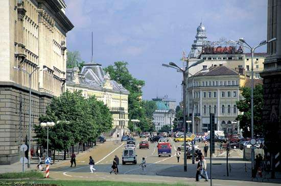

History of Sofia

The Serdi (Sardi), a Thracian tribe, established a settlement in the region in the 8th century BCE.
This community was conquered soon after 29 BCE by the Romans, who named it Serdica (Greek: Sardica).
It flourished during the reign of the emperor Trajan (98–117) and reached its greatest height under the emperor Constantine I the Great;
in 342 or 343 it was the site of an important meeting of Christian bishops, the Council of Sardica.
From the 4th century it was part of the Western Roman Empire, but with the decline of Rome passed to Byzantium;
it was plundered by Attila and the Huns in 441–447.
During the 6th century Byzantine influence increased under the emperor Justinian, and the restored Church of St. Sofia, which later gave the town its name, survives from this period.
In 809 the Bulgarian khan Krum seized the town and incorporated it in the Bulgarian state; it was given the Slav name Sredets (Greek: Triaditsa).
It was under Byzantine rule from 1018 until 1185, when the second Bulgarian Empire was established. . .